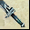

Rare Weapons
Better than normal weapons, Rare Weapons are great but also extremely difficult to come by. This is a list of all the rare weapons in the game.
| Rare Bows | ||||
|---|---|---|---|---|
| Name | Level | Description | Found | |
 |
Bow of the Eagle | 51 |
Base Dmg +80-100, Lightning Dmg +150-300, AR +7%, Lightning Resistance +10 Inflicts 50 points penalty to Lightning Resistance (12 sec) (Per req-50) |
? |
 |
Diving Hawk Bow | 51 | Base Dmg +130-180, Fire Dmg +130-210, Critical Chance +20 (Per req-50) | ? |
|
Bite of the Wind | 51 |
Base Dmg +130-180, Cold Dmg +130-205, Weapon Attack Speed +1 Critical Chance +5 (Per req-50) |
? |
|
Thunder's Anger | 51 |
Base Dmg +130-180, Lightning Dmg +125-205, Inflicts Entangle Inflicts 30 Lightning Constant Damage (12 sec) (Per req-50) |
? |
|
Strike of the Eagle | 51 |
Base Dmg +140-220, Physical Dmg +30-60, Fire Dmg +35-70, Critical Chance +20 Critical Power +1 (Per req-50) |
? |
|
Bow of Power | 51 | Base Dmg +130-180, Physical Dmg +127-215, Critical Power +1 (Per req-50) | ? |
|
Bow of Soul Crush | 51 | Base Dmg +200-300, Lightning Dmg +50-100, Chi Dmg +300-400 (Per req-50) | ? |
|
Eye of the Breeze Bow | 51 |
Base Dmg +160-200, Fire Dmg +50-90, Critical Chance +25 Critical Power +1 (Per req-50) |
? |
 |
Dark Shadow Bow | 60 | Base Dmg +50-70, AR +60, Critical Chance +3 (Per req-58) | Drop |
|
Dark Phantom Bow | 70 |
Base Dmg +60-80, Critical Chance +3, Fire Dmg +20-40, Cold Dmg +20-40 (Per req-65) |
Drop |
| Rare Sabers | ||||
|---|---|---|---|---|
| Name | Level | Description | Found | |
 |
Icy Cool Saber | 51 |
Base Dmg +80-100, Cold Dmg +150-300, Cold Resistance +10 Inflicts 50 points penalty to Cold Resistance, Inflicts Slow (Str req-50) |
? |
 |
Ying Yang Saber | 51 |
Base Dmg +120-170, Fire Dmg +127-215, DR +7% Inflicts 7% penalty to Attack Rating (Str req-50) |
? |
|
Severing Wind | 51 |
Base Dmg +120-170, Physical Dmg +130-215, AR +7% Inflicts 7% penalty to Defense Rating (Str req-50) |
? |
|
Sun's Reflection | 51 |
Base Dmg +120-170, Fire Dmg +120-220, Inflicts Blindness Inflicts 30 Fire Constant Damage (12 sec) (Str req-50) |
? |
|
Slashing Strikes | 51 |
Base Dmg +120-220, Physical Dmg +30-60, Cold Dmg +35-70, Critical Chance +20 Critical Power +1 (Str req-50) |
? |
|
Saber of Hearts | 51 |
Base Dmg +120-170, Lightning Dmg +120-225, Drain 15% of total Attack Damage to HP (Str req-50) |
? |
|
Soul Crushing Saber | 51 | Base Dmg +200-300, Cold Dmg +50-100, Chi Dmg +300-400 (Str req-50) | ? |
|
Eye of the Storm Saber | 51 |
Base Dmg +160-200, Cold Dmg +50-90, Critical Chance +25 Critical Power +1 (Str req-50) |
? |
|
Dark Shadow Saber | 60 | Base Dmg +50-70, AR +60, Critical Chance +3% (Str req-58) | Drop |
|  | Dark Phantom Saber | 70 |
Base Dmg +60-80, Critical Chance +3%, Fire Dmg +20-40, Cold Dmg +20-40 (Str req-65) |
Drop |
| Rare Staff/Spears | ||||
|---|---|---|---|---|
| Name | Level | Description | Found | |
 |
Serpent's Sting | 51 |
Base Dmg +80-100, Poison Dmg +150-300, Poison Resistance +10 Inflicts 50 points penalty to Poison Resistance (12 sec) Inflicts Stun (Agi req-50) |
? |
| Celestial Splendor | 51 |
Base Dmg +100-150, Fire Dmg +147-235, AR +7% Inflicts 7% penalty to Defense Rating (Agi req-50) |
? | |
|
Dragon's Fang | 51 |
Base Dmg +100-150, Physical Dmg +140-240, Critical Power +1 (Agi req-50) |
? |
| Ancient Staff | 51 |
Base Dmg +100-150, Poison Dmg +142-245, Reflect 20% of Damage done by Opponent (Agi req-50) |
? | |
|
Striking Edge Spear | 51 |
Base Dmg +120-220, Physical Dmg +30-60, Poison Dmg +35-70 Critical Chance +20, Critical Power +1 (Agi req-50) |
? |
| Godly Staff | 51 |
Base Dmg +100-150, Lightning Dmg +137-235 Inflicts 15% penalty to Attack Rating (Agi req-50) |
? | |
|
Soul Breaker | 51 |
Base Dmg +200-300, Physical Dmg +50-100, Chi Dmg +300-400 (Agi req-50) |
? |
| Eye of the Tornado Staff | 51 |
Base Dmg +160-200, Poison Dmg +50-90, Critical Chance +25 Critical Power +1 (Agi req-50) |
? | |
| Dark Shadow Staff | 60 | Base Dmg +50-70, AR +60, Critical Chance +3% (Agi req-58) | Drop | |
| Dark Phantom Staff | 70 |
Base Dmg +60-80, Critical Chance +3%, Fire Dmg +20-40, Cold Dmg +20-40 (Agi req-65) |
Drop | |
| Rare Swords | ||||
|---|---|---|---|---|
| Name | Level | Description | Found | |
 |
Spirit of the Kirin | 51 |
Base Dmg +80-100, Fire Dmg +150-300, Fire Resistance +10 Inflicts 50 points penalty to Fire Resistance Inflicts 30 Fire Constant Damage (12 sec) (Agi req-30, Per req-30) |
? |
|
Frozen Blade | 51 |
Base Dmg +120-170, Cold Dmg +147-215, Inflicts 7% penalty to Attack Rating Inflicts Confusion (12 sec) (Agi req-30 Per req-30) |
? |
|
Sword of the East | 51 |
Base Dmg +120-170, Poison Dmg +127-225, Drain 20% of total Attack Damage to Chi (Agi req-30 Per req-30) |
? |
 |
Shadowless Blade | 51 |
Base Dmg +120-170, Cold Dmg +147-215, Weapon Attack Speed +1 Critical Chance +5 (Agi req-30 Per req-30) |
? |
|
Death Strike | 51 |
Base Dmg +120-220, Physical Dmg +30-60, Fire Dmg +35-70 Critical Chance +20, Critical Power +1 (Agi req-30 Per req-30) |
? |
|
Slashing Blade | 51 |
Base Dmg +120-170, Physical Dmg +125-220, Critical Chance +20 (Agi req-30, Per req-30) |
? |
|
Sword of Souls | 51 |
Base Dmg +200-300, Fire Dmg +50-100, Chi Dmg +300-400 (Agi req-30, Per req-30) |
? |
|
Eye of the Hurricane Sword | 51 |
Base Dmg +160-200, Lightning Dmg +50-90, Critical Chance +25 Critical Power +1 (Agi req-30, Per req-30) |
? |
 |
Dark Shadow Sword | 60 | Base Dmg +50-70, AR +60, Critical Chance +3% (Agi req-58 Per req-58) | Drop |
|
Dark Phantom Sword | 70 |
Base Dmg +60-80, Critical Chance +3%, Fire Dmg +20-40, Cold Dmg +20-40 (Agi req-65 Per req-65) |
Drop |
- - Bows |
- Sabers |
- Staff/Spears |
- Swords |
- Rare Weapons |
- Boundless -
- - Back to Home -